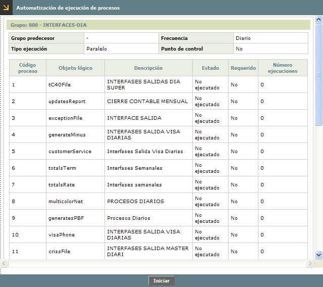

Automatización de procesos
Mediante este formulario se habilita la ejecución automática de los procesos que hayan sido definidos con frecuencia de ejecución diferente a 'Especial'.
Al ingresar a la opción, el formulario muestra todos aquellos procesos cuya fecha próxima ejecución corresponda con la fecha actual de proceso del aplicativo.

Descripción de campos
Grupo predecesor |
Campo que muestra si el caso el código del grupo que es predecesor del grupo al que pertenece el proceso. |
Frecuencia |
En este campo se indica la frecuencia con la que se debe ejecutar el proceso y que puede ser Diario, Facturación, Mensual u Otro. |
Tipo ejecución |
Campo que muestra si la ejecución de los procesos es Secuencial o en Paralelo, es decir, si se deben ejecutar uno a uno o es posible seleccionar varios de los procesos y enviarlos a ejecución simultáneamente. |
Punto de control |
En este campo se indica si para el proceso se definió un punto de control para hacer seguimiento del mismo. |
Código proceso |
Campo que muestra el código de cada uno de cada uno de los procesos a ejecutar. |
Objeto lógico |
En este campo se despliega el objeto que identifica cada uno de los procesos a ejecutar. |
Descripción |
Campo que contiene la descripción o nombre de cada objeto asociado al proceso. |
Estado |
Este campo señala el estado actual de cada proceso y que puede ser No ejecutado, Ejecución parcial, Ejecución total, Proceso pendiente o En ejecución. |
Requerido |
Campo en el que se señala si el proceso tiene la condición de obligatorio o no, lo que es evaluado por el sistema al momento de hacer el cambio de calendario para no permitir la acción hasta tanto todos los procesos obligatorios hayan sido lanzados y su estado sea Ejecución total. |
Número de ejecuciones |
Campo que muestra la cantidad de veces que el proceso ha sido ejecutados durante la fecha de proceso actual. Cuando se hace cambio de calendario, este campo se inicializa en cero para todos los procesos. |
Una vez que el usuario autorizado para lanzar los procesos invoca el botón Iniciar se da comienzo a la ejecución de los mismos y una vez finalizada su ejecución bien sea sin error (Ejecución total) o con algún error (Ejecución parcial) se le envía un mail al correo registrado del usuario que lanzó la ejecución indicándole el resultado del mismo.